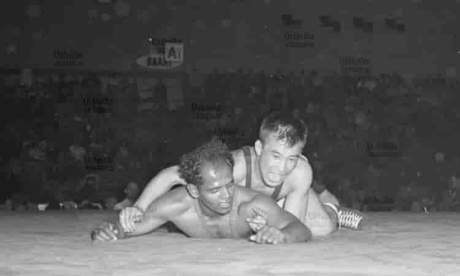
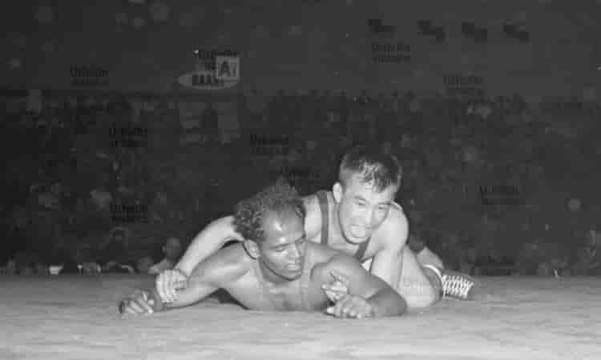

Khashaba Dadasaheb Jadhav (1926–1984)
Khashaba Dadasaheb Jadhav, fondly known as “Pocket Dynamo,” was India’s first individual Olympic medalist, earning a bronze in wrestling at the 1952 Helsinki Games. Born on January 15, 1926, in Goleshwar village, Satara district, Maharashtra, he emerged from humble beginnings to become a national icon, inspiring generations of Indian athletes.
Early Life & Background
Jadhav was introduced to wrestling by his father, Dadasaheb Jadhav, who himself was a respected wrestler in the local talim (training ground). As a child, Khashaba trained in traditional akhadas, mastering the art of kushti before transitioning to freestyle wrestling. His education at Rajaram College in Kolhapur, under the guidance of coach Baburao Balawde and wrestling legend Reeshe Lashman, gave him the foundation to compete at the international level.
Wrestling Career & Achievements
- Represented India at the 1948 London Olympics, finishing 6th — an extraordinary debut for independent India’s wrestling team.
- Won the bronze medal at the 1952 Helsinki Olympics in the 57 kg freestyle category, becoming India’s first individual Olympic medalist.
- Trained under rigorous discipline, combining Indian kushti strength-building with modern mat techniques learned from international coaches.
- Known for his lightning-fast leg attacks and quick reflexes despite his short stature — hence the nickname “Pocket Dynamo.”
- Honored posthumously with the Arjuna Award (2000) and commemorated with the Chhatrapati Award by the Maharashtra Government.
Training Philosophy
Jadhav believed wrestling was not just about power, but about precision, balance, and intelligence. His daily regimen included early morning runs, thousands of dands (push-ups) and bethaks (squats), and focused breathing exercises. He maintained a simple diet rich in milk, ghee, and almonds, avoiding all vices to preserve stamina and focus.
He often said, “A wrestler’s greatest opponent is not another man, but his own weakness.” His blend of humility, determination, and patriotism made him a symbol of Indian resilience on the world stage.
Legacy
Khashaba Jadhav’s triumph in Helsinki was more than a personal victory — it was a defining moment in India’s post-independence sporting history. Despite limited resources and institutional support, he proved that Indian athletes could excel internationally.
His legacy lives on through the Khashaba Jadhav Stadium in Pune and various wrestling tournaments held in his honor across Maharashtra. In 2010, a postal stamp was issued in his name, immortalizing his contribution to Indian sports.
 

Personal Life & Later Years
After his Olympic success, Jadhav served as a police officer with the Maharashtra Police. He remained active in promoting wrestling and mentoring young athletes until his untimely death in a road accident in 1984. His contribution remains a cornerstone in India’s wrestling history — a story of grit, pride, and an unyielding quest for excellence.
Quote
“A man’s stature is not measured by his height, but by the heights he reaches for his nation.”